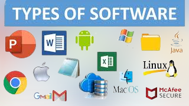
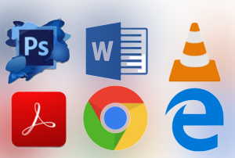
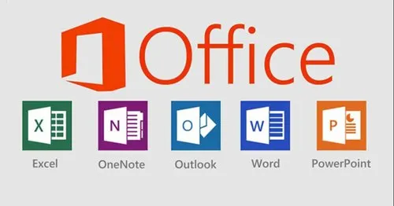

Je v informatice sada všech počítačových programů používaných v počítači, které
provádějí nějakou činnost. Software lze rozdělit na systémový software, který
zajišťuje chod samotného počítače a jeho styk s okolím a na aplikační software,
se kterým buď pracuje uživatel počítače nebo zajišťuje řízení nějakého stroje
Software je protiklad k hardwaru. Označení software se tak někdy
vztahuje jen na programy, ale může se vztahovat i na data.


Škodlivý software
Software může provádět i nezamýšlenou činnost a v takovém případě hovoříme buď
o programátorské chybě nebo o počítačových virech, malware, spyware, trojských koních
a podobném nežádoucím software. Důvodem existence nežádoucího software jsou zlé nebo
nečestné úmysly jejích tvůrců, kteří zneužívají chyb ostatních software
Běžný uživatel počítače obvykle nemá dostatečné technické znalosti,
aby takový software rozeznal nebo dokonce zabránil v jeho činnosti.
Proto existují antivirové programy, antispyware a další programy,
které leží na pomezí aplikačního a systémového software a pokouší se
činnost nežádoucího software eliminovat.

Rozdělení softwaru
Podle funkce můžeme software rozdělit na několik skupin:
systémový software: umožňuje efektivní používání počítače
firmware: obsažené v hardware (BIOS, firmware vstupně-výstupních zařízení…)
operační systém: spravuje počítač, vytváří prostředí pro programy
pomocné systémové nástroje:pro správu operačního systému
aplikační software: umožňuje uživateli vykonávat nějakou užitečnou činnost
zábavní software: počítačové hry, přehrávače digitálního zvuku a videa apod.
řídící software: řízení strojů, informačních systémů, vlakového provozu, apod.
Systémový software
Systémový software je v informatice speciální programové vybavení,
které umožňuje uživateli s počítačem pracovat, ovládat ho, spouštět
aplikace a podobně. Systémový software se nachází na pomezí hardware
a aplikačního software a běžný uživatel s ním přímo nepracuje (na rozdíl od aplikací).
Mezi systémový software patří operační systém, pomocné nástroje a firmware.
Aplikační software
Aplikace využívají pro interakci s uživatelem grafické nebo textové rozhraní,
případně příkazový řádek. Aplikace se může skládat z několika počítačových programů.
Aplikace se může skládat z několika programů, případně je několik
aplikací spojeno do skupiny, kterou označujeme jako aplikační balíky